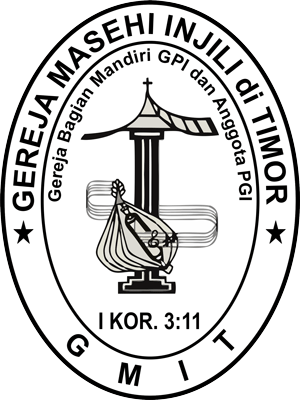

Sejarah GMIT
Ringkasan fase penting dalam sejarah gereja di wilayah Timor hingga berdirinya GMIT.
Periode Perkembangan Sejarah GMIT
Berikut fase utama sejarah gereja di Timor — klik untuk melompat ke bagian detail di bawah.
Portugis (1556–1613)
Misi Katolik awal — pengenalan agama, pembaptisan massal, pembentukan sekolah gereja.
Belanda (1614–1941)
Periode zending Protestan, pembentukan sekolah, dan perkembangan struktur gerejawi.
Jepang (1942–1945)
Perang dan reorganisasi gereja oleh pengurus lokal — kelangsungan pelayanan digenggam oleh jemaat.
Pra‑GMIT (1945–1947)
Transisi, persiapan struktur otonom dan sinode yang mempersiapkan pemandirian gereja di Timor.
GMIT (1947–Kini)
Pendirian GMIT dan perkembangan tata gereja, pendidikan, serta pelayanan kontekstual.
PERMULAAN TUMBUHNYA GEREJA PADA MASA PORTUGIS (1556–1613)
Kedatangan bangsa-bangsa barat, khususnya Portugis dan Belanda di Indonesia didorong oleh berbagai motif. Motif yang mendorong bangsa Portugis ke Timor ialah kekristenan dan rempah-rempah. Sedangkan bangsa Belanda memiliki motif tambahan yakni faktor politis dan sosial. Agama Kristen dibawa ke NTT oleh orang Portugis. Mula-mula di Pulau Solor dan kemudian ke seluruh Pulau Flores dan Pulau Timor, bagian yang berdekatan dengan Pulau Solor, yaitu Lifao dan Dili. Jadi agama Kristen yang bercorak Roma katolik dibawa oleh para missionaris Portugis. Daerah-daerah dimana agama katolik merupakan jumlah terbesar masyarakat NTT kini ialah yang digarap lebih dulu oleh Portugis., yaitu di Pulau Flores dan dua kabupaten di Pulau Timor yakni Timor Tengah Utara dan Belu.
Tiga ordo memikul tugas misi di asia yaitu Ordo Fransiscan, Ordo Jesuit dan Ordo Dominikan. Yang bertugas di Pulau Solor, Flore dan Timor adalah Ordo Dominikan, tetapi segala usaha pengkristenan di Timor tidak jauh berbeda dengan di Maluku yang telah digariskan oleh Fransiskus Xaverius dari Ordo Jesuit yang tiba di Maluku pada tahun 1546.
Missionaris yang pertama tiba di Pulau Timor adalah Antonia de Taveiro pada tahun 1556. Pada tahun 1562 dikirim lagi para bruder. Setiap orang yang akan dibaptiskan hanya diharuskan mempelajari Credo, Pengakuan Dosa, Doa Bapa Kami, Salam Maria dan 10 perintah. Sistem pengkristenan pertama kali lebih ditekankan pada kuantitas dibanding kualitas. Akibatnya adalah banyaknya orang yang bersedia dibaptis namun selang beberapa waktu setelah dibaptis, mereka kembali ke dalam kekafirannya. Pengluasan penyebaran Injil oleh Portugis di NTT ini mulai menghadapi tantangan pada abad yang XVII dengan datangnya Belanda yang mendirikan bentengnya di Kupang, yang dinamainya “Fort Concordia” pada tahun 1613.
GEREJA PROTESTAN SELAMA PEMERINTAHAN BELANDA
- Masa Oud Hollandse Zending (1614–1814)
Masa ini adalah masa yang paling panjang dari sejarah pekabaran Injil di Timor dan pulau-pulaunya. Sayangnya data-data mengenai masa ini sangat sedikit. Menurut sumber-sumber resmi, gereja di Indonesia termasuk Timor, dianggap sebagai bagian atau cabang dari gereja Belanda.
Sebagai pemerintah, VOC mempunyai tanggung jawab pemeliharaan dan penyebaran iman Kristen di Indonesia. Gereja di Indonesia harus merupakan copian yang persis sama dengan gereja di Nederland. Terus-menerus gereja di Indonesia diingatkan untuk mengikuti segala sesuatu yang dipraktekkan dalam gereja Belanda dan hidup menurut peraturan yang berlaku di sana. Pendeta Belanda yang pertama kali tiba di Kupang ialah Drs. Matheus Van der Broek pada tahun 1514. Corak gereja ialah Protestan (Hervormd). Sejalan dengan yang umum berlaku diutamakan pemeliharaan rohani pegawai VOC dalam Benteng Corcondia. Pekabaran Injil keluar benteng belum dilaksanakan secara sistematis dan serius kecuali bila ada waktu luang.
Pendeta Van der Broek harus cepat pulang. Kemudian pulau dan jemaatnya dilupakan untuk lebih kurang 50 tahun. Pada tahun 1670 ditempatkan Ds. Key Sero Kind di Kupang. Belum lama ia diganti oleh Ds. A. Corpius tahun 1687 yang setahun kemudian wafat. Terhitung dari tahun 1688 sampai tahun 1730 hanya terdapat 8 kali perkunjungan oleh pendeta dari Batavia (Jakarta). Sekolah yang pertama kali didirikan di Timor ialah di Kupang tahun 1701. Jumlah muridnya sebanyak 22 orang. Sekolah itu diawasi oleh Majelis Gereja Kupang.
Statistik jemaat Kupang:
- Tahun 1702 jumlah anggota 54 orang
- Tahun 1719 jumlah anggota 84 orang
- Tahun 1729 jumlah anggota 460 orang
- Tahun 1753 jumlah anggota 1300 orang
Agama krieten kemudian menuju pulau Rote pada tahun 1739 yang dimulai oleh raja Thi. Mulanya ia ke Batavia untuk suatu urusan tetapi di sana ia berjumpa dengan agama Kristen. Sekembalinya ke Rote, ia dan rakyatnya meminta masuk Kristen. Kemudian disusul oleh raja Lole. Pada tahun 1760 jumlah orang Kristen di Rote sudah mencapai 5870 dengan 1445 murid sekolah.
Di pulau Sabu, agama Kristen masuk pada tahun 1758. Pada tahun 1766 sudah terdapat 5 jemaat yaitu Timu, Seba, Liae, dan Menia. Seringkali jemaat-jemaat di NTT tidak bergembala atau setidaknya tidak layani seperti seharusnya, tetapi Tuhan terus bertindak dan mereka dapat bertahan sampai abad ini.
- Masa Nederlandse Zendeling Genootschap (1814–1860)
Pada abad XVII di Eropa barat muncul segolongan orang yang mementingkan saleh, sederhana, beribadat, mempelajari kitab suci serta giat mengajarkan pekabaran Injil. Aliran baru ini terkenal dengan nama Pietisme. Salah satu dari persekutuan PI di Indonesia dan di Timor adalah Nederlandse Zendeling Gennotschap (NZG) yang didirikan tanggal 19 desember 1799, tahun dimana VOC dibubarkan. NZG itu memainkan peranan yang sangat penting di pulau Timor selama lebih kurang 40 tahun , tetapi di Sabu jauh lebih lama.
Cara NZG berbeda dengan Oud Hollandse Zending. Dengan sadar NZG tidak mau melanjutkan propaganda gerakan atau ajaran tertentu, supaya dengan jalan itu mendirikan suatu tipe gereja yang tertentu. Yang ia mau lakukan ialah hanya mengajarkan prinsip-prinsip agama Kristen yang benar kepada orang-orang kafir.
Tenaga NZG yang pertama ialah Dws. R. Le Bruyn. Ia tiba di Kupang pada tahun 1819. Dikarenakan keadaan daerah yang buruk dan fisiknya lemah, maka sepuluh tahun kemudian ia meninggal dunia yakni 21 Mei 1929. Walaupun demikian hasil karyanya tetap cemerlang di Timor.
Yang dikerjakan oleh Ds. R. Le Bruyn sbb:
- Mengunjungi anggota jemaat di sekitar Kupang dan Babau, terletak 16 km dari Kupang.
- Menterjemahkan thalil ke dalam bahasa Melayu.
- Mengarang buku-buku yang berguna bagi PI.
- Mendirikan lembaga Alkitab Hindia Belanda.
- Mengumpulkan orang untuk memperbaiki gedung gereja Kupang yang sudah ditinggalkan sejak 1797.
- Membagi waktu untuk mengunjungi jemaat-jemaat di Rote dan Kisar, yang dilayani dari Kupang juga.
- Ia juga mengabarkan Injil dikalangan budak yang banyak memberi hasil dan kadang-kadang melalui budak-budak ini tuan-tuannya dapat ditarik kepada Kristus.
- Ia membuka lagi sekolah-sekolah yang sudah ditutup di Kupang dan Rote.
- Dengan bantuan Residen Hessert dapat dibangun satu rumah piatu.
Pendeta-pendeta selanjutnya yang dikirim dari Belanda meneruskan pekerjaan NZG. Ada yang berhasil, ada yang tidak, ada yang harus cepat pulang karena sakit, dan ada yang meninggal dunia. Guru-guru sekolah, ada yang merangkap sebagai guru jemaat dan dididik di Kwekschool di Ambon. Oleh karena itu, “pola Ambon” sangat mempengaruhi jemaat-jemaat dan kehidupan di Timor. Sama seperti di Ambon dan Minahasa, juga di Timor bahasa Melayu dianggap dan dipakai sebagai bahasa gereja dan bahasa sekolah resmi.
- Masa Indische Kerk (1860–1941)
Indische Kerk yang merupakan gereja negara yang dibentuk di Indonesia pada tahun 1817. Gereja dijadikan suatu lembaga administrasi negara yang mengurus soal-soal rohani. Gereja bergantung pada negara dalam segala hal. Pengurus Indische Kerk dilantik oleh gurbenur jenderal. Pengurus itu yang disebut Kerk Bestuur berkedudukan di Batavia. Pengangkatan pendeta diusul oleh pengurus itu. Tiap-tiap pendeta, syamas dan jemaat harus disyahkan oleh gubernur jendral. Indische Kerk tidak mau mempropagandakan ajaran-ajaran tertentu. Indische Kerk tidak menjadi gereja Gereformeerd atau Hervormd tetapi Protestan. Prinsip-prinsip dari Indische Kerk ialah Protestantisme.
Tujuan utama dari Kerk Bestuur ialah memperhatikan kepentingan, baik dari agama Kristen pada umumnya maupun dari gereja Protestan. Khususnya memperkembangkan pengetahuan agamiah, memajukan adat kebiasaan Kristen, menjaga keamanan dan kerukunan, menanamkan rasa cinta terhadap pemerintah dan tanah air. Dalam tujuan itu hampir-hampir tidak terdapat unsur kerygama Perjanjian Baru. Kerygama itu dirubah dan disesuaikan dengan situasi baru. Maksud ajaran Indische Kerk yakni memperlengkapi anggota-anggotanya dengan nilai-nilai religius dan ethis.
Tokoh-tokoh gereja pada akhir XIX ialah Donselaar dan J.J Niks. Donselaar bekerja sejak NZG berdiri, dan tetap bekerja di Timor sampai wafatnya pada tahun 1883. J.J Niks ditempatkan di Babau dan bekerja disana antara tahun 1874 dan tahun 1894.
Pada tahun 1890 di Rote ditempatkan Ds. J.J Le Grand. Pada tahun 1895 Le Grand menerbitkan kitab Injil Lukas dalam bahasa Rote dan untuk pertama kali khotbah dibuat dalam bahasa Rote. Le Grand juga mendidik siswa untuk menjadi Indlands Leraar (guru pribumi). Atas usahanya dibuka di Rote tahun 1902 sebuah sekolah guru Injil yang disebut STOVIL (School Tot Opeleiding Voor Inslands Leraar).
Pada tahun 1910 di Kupang ditempatkan seorang predikant Voorzitter yang memimpin gereja di seluruh keresidenan Timor, yaitu Ds. William Black. Ia mengusahakan PI di pulau Alor pada tahun 1911. Ds. Groothius berkedudukan di Babau. Ia berusaha menterjemahkan Injil ke dalam bahasa Timor dan berkhotbah dalam bahasa Timor. Pada tahun 1916 Injil baru mulai masuk ke pedalaman Timor. Di pulau Timor pada tahun 1922 tiba Ds. P. Middelkoop yang khususnya mengadakan penelitian mengenai bahasa Timor serta buku-buku nyanyian gereja.
Pada tahun 1922 Stovil dipindahkan ke Kupang dalam tahun 1931 Stovil ditutup oleh gereja sebab timbulnya sesuatu gerakan (yang ditanggapi oleh pimpinan sebagai nasionalisme). Kemudian dibuka lagi sebagai suatu sekolah Theologia di Soe tahun 1936 dan berlangsung sampai perang dunia kedua. Jumlah anggota Kristen di TTS pada tahun 1920 hanya 200 orang saja. Sesudah perang dunia II jumlah meningkat menjadi 80.000 orang.
Di Alor Ds. Binkhuisen memberi banyak perhatian pada bidang pendidikan. Penggantinya Ds. Van Daalen telah membaptiskan ribuan orang antara 1923-1924. Hanya dua orang, yaitu Boeken Kruger dan Mollema tinggal lebih dua atau tiga tahun di Alor. Banyak tenaga jatuh sakit sebab keadaan kesehatan di Alor amat berat bagi orang barat. Tetapi atas usaha orang-orang ini hampir setiap tempat di Alor ada gereja, sekolah dan pesanggrahan, dan kadang-kadang di tempatkan seorang Island Leraar yang bertugas sebagai pendeta dan pengawas sekolah.
Di Pulau Flores juga terdapat beberapa jemaat, khususnya di kota-kota yang dikunjungi dua kali setahun dari Kupang. Begitu juga di beberapa kota sumbawa timur.
GEREJA PADA MASA PENDUDUKAN JEPANG (1942–1945)
Pendaratan pasukan Jepang di Kupang (awal 1942) mengakhiri administrasi Hindia Belanda di NTT. Banyak tenaga Belanda ditahan sehingga pelayanan resmi terganggu. Para pelayan gereja kemudian bergantung pada dukungan jemaat setempat dan sering harus mencari nafkah tambahan (bertani, berkebun).
Untuk mengatur urusan gerejawi dibentuk Badan Gereja Timor Selatan dengan susunan pengurus sebagai berikut:
- Ketua: Bapak N. Nisnoni (Raja Kupang)
- Wakil Ketua: Bapak Arnoldus (Kota Kupang)
- Sekretaris: Pdt. E. Tokoh
- Bendahara: Bapak Habel (Oeba)
- Anggota: Penantua Kafin (Oeba) dan tokoh-tokoh lokal lain
Badan ini juga mengatur penggajian lokal (contoh: pendeta Rp.50/bulan), pengangkatan pelayan, pengawasan sekolah, serta pengelolaan sumbangan. Meski masa ini penuh kesulitan dan beberapa pelayan menjadi korban, gereja berhasil bertahan hingga akhir perang.
SITUASI MENJELANG PEMBENTUKAN GMIT (1945–1947)
Setelah Perang Dunia II timbul tuntutan agar gereja-gereja di kepulauan memperoleh status otonom. Komisi-komisi persiapan dan tokoh-tokoh lokal bekerja menyiapkan konstitusi gereja setempat.
Pada 31 Oktober 1947, hasil persiapan tersebut mewujud menjadi gereja yang berdiri sendiri bernama Gereja Masehi Injili di Timor (GMIT). Sinode pertama GMIT terdiri dari enam klasis dan beberapa jemaat mandiri.
Klasis dan jemaat awal (singkat):
- Klasis Kupang (Kupang & Amarasi)
- Klasis Camplong (Fatuleu & Amfoang)
- Klasis Soe (Amanuban, Amanatun, Mollo, TTU & Belu)
- Klasis Alor/Pantar
- Klasis Rote
- Klasis Sabu
Selain itu terdapat beberapa jemaat berdiri sendiri seperti Jemaat Kota Kupang, Jemaat Ende (Flores), dan Jemaat Sumbawa.
MASA GEREJA MASEHI INJILI DI TIMOR (1947–KINI)
Periode awal (1947–1950) difokuskan pada konsolidasi struktur kepemimpinan, administrasi, dan tanggung jawab keuangan. GMIT kemudian mengembangkan tata gereja, pendidikan teologi, liturgi, serta pelayanan yang lebih kontekstual.
Ringkasan fase perkembangan:
- 1947–1950 — Konsolidasi dan penyesuaian tata gereja serta pemisahan finansial gereja dan negara.
- 1950–1975 — Perluasan lembaga pendidikan, pengembangan liturgi, dan penguatan struktur sinode.
- 1960–1970 — Periode dengan tantangan sosial-politik namun juga gerakan rohani lokal.
- 1970–1975 — Peremajaan kepemimpinan dan dinamika pelayanan yang lebih intensif.
GMIT terus beradaptasi dan mengembangkan pelayanan di berbagai wilayah Timor hingga saat ini, dengan peningkatan jumlah jemaat, kegiatan pendidikan, dan pelayanan sosial.